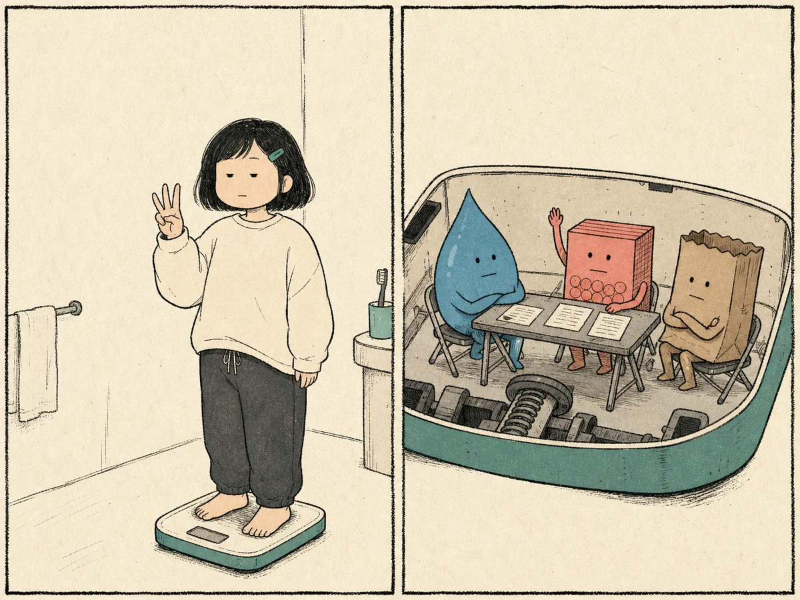
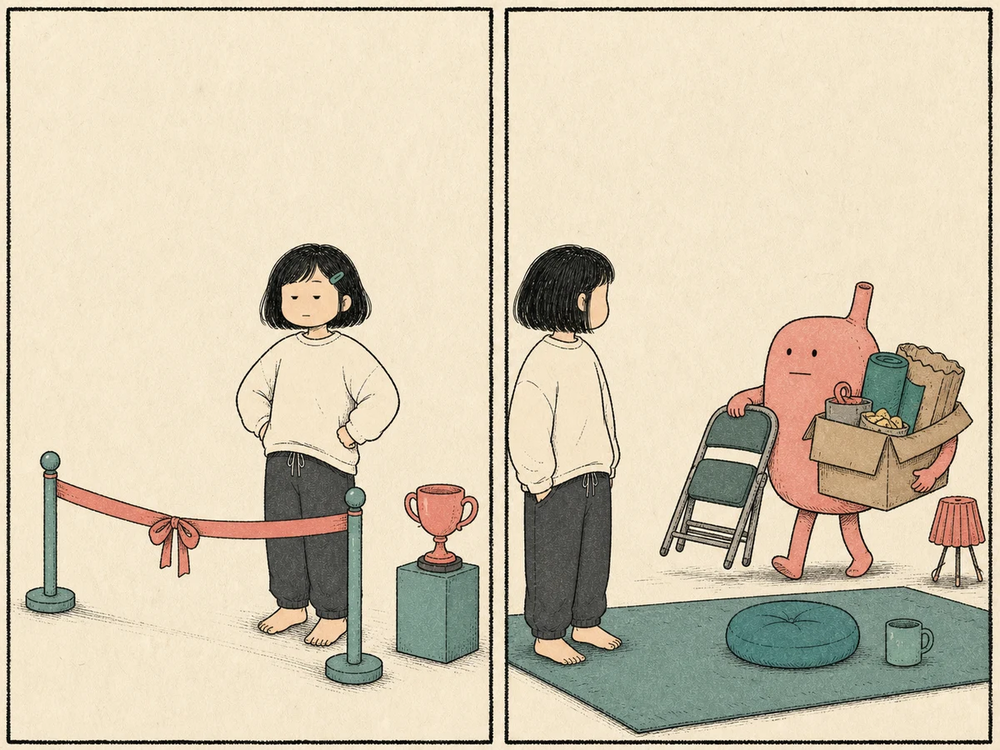
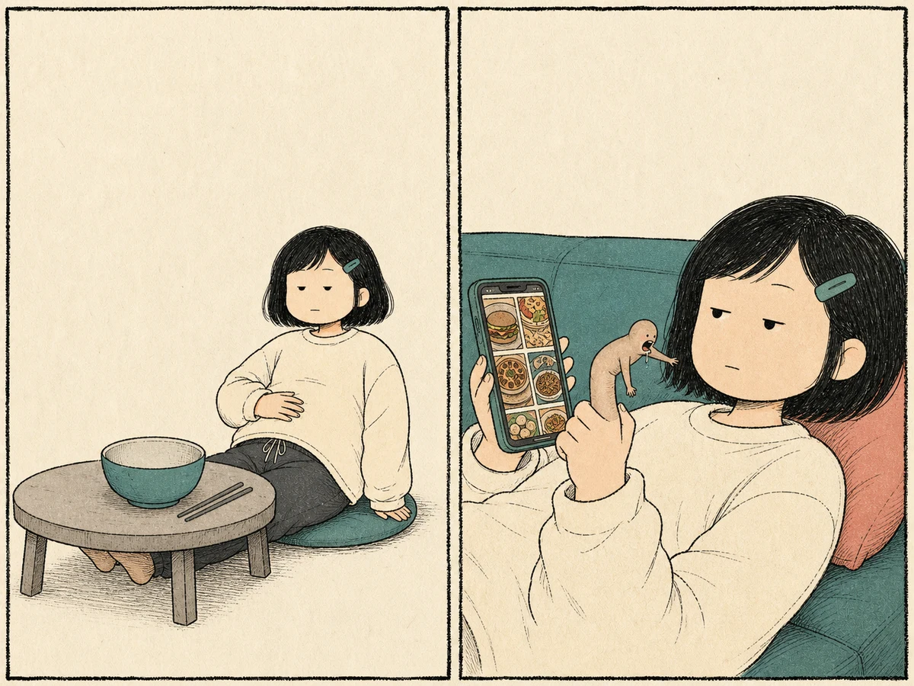
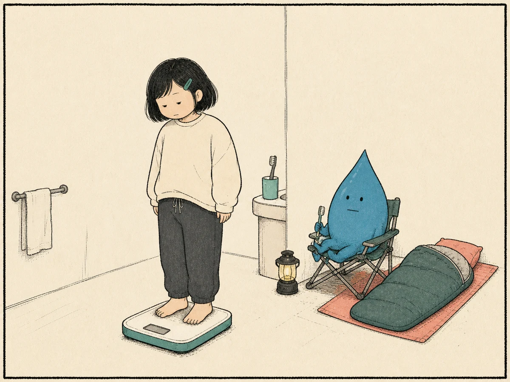
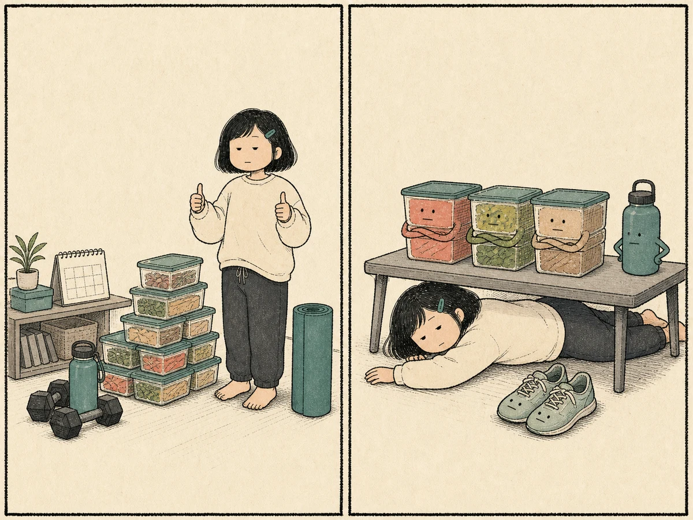
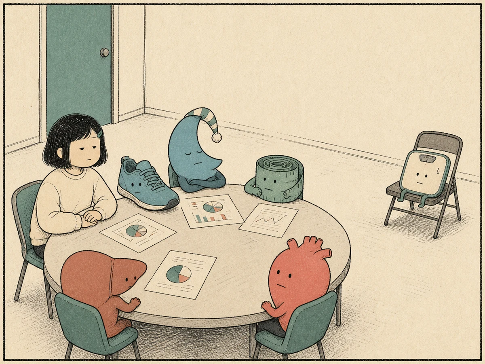

사흘 동안 분명히 덜 먹었는데 체중계는 그대로이고, 어렵게 감량한 뒤에는 이전보다 더 빠르게 체중이 돌아오기도 합니다. 저녁마다 이번에는 참겠다고 생각하면서도 어느새 배달 앱을 열고 있고, 어떤 날은 먹은 것도 많지 않은데 몸이 퉁퉁 붓고 무겁습니다.
체중은 체지방만 측정하는 숫자가 아니고, 식욕은 위장이 비었을 때에만 발생하지 않습니다. 체중을 줄이고 나면 식욕과 에너지 소비 역시 감량 전과 다른 방향으로 적응합니다. 최신 국내 비만 진료지침도 비만을 만성적이고 재발할 수 있는 질환으로 다루며 개인의 건강위험과 치료 반응을 고려한 장기적·개별화된 관리를 강조합니다. 7
그래서 이번에는 조금 다른 질문에서 시작해보셔도 좋겠습니다.
지금까지 나는 왜 계속 같은 곳에서 막혔을까요?
사흘을 덜 먹어도, 체중계는 그대로예요.
식사량을 줄인 지 사흘째입니다. 평소 먹던 간식도 끊었고 늦은 저녁도 피했습니다. 그런데 아침 체중은 어제와 똑같습니다. 심지어 300g 정도 늘어 있기도 합니다.

여성이 “3일 했는데 변화 없음?”이라고 묻는다. 체중계 안에서 체수분, 글리코겐, 소화관 내용물 캐릭터가 회의하며 “아직 회의 중입니다.”라고 답한다.
수일간의 체중 변화와 수일간의 체지방 변화는 같은 이야기가 아닙니다. 체중계가 재는 것은 지방만이 아니라 체수분, 글리코겐, 소화관 내용물을 모두 합친 몸의 총질량입니다. 특히 글리코겐은 수분과 함께 저장되므로 탄수화물 섭취나 운동에 따른 저장량 변화가 단기간 체중에도 영향을 줄 수 있습니다.
여성의 경우 월경주기도 체중계 해석을 더 복잡하게 만듭니다. 42명을 반복 측정한 2023년 연구에서 월경 시기 체중은 주기의 첫 주보다 평균 0.450kg 높았고, 세포외수분은 평균 0.474kg 증가했습니다. 1 지방 0.45kg이 갑자기 생겼다는 뜻이 아니라, 이 연구에서는 차이가 주로 체수분으로 설명됐다는 뜻입니다.
체중계가 보는 것과 우리가 궁금한 것은 다릅니다
이것은 42명에게서 주기 중 네 시점을 반복 측정한 관찰연구입니다. 개인마다 같은 폭으로 오르내린다는 뜻도, 모든 단기 정체가 월경 때문이라는 뜻도 아닙니다. 다만 하루 체중의 작은 차이를 곧바로 지방의 증감으로 판정하기 어렵다는 것을 실제 측정치로 보여줍니다.
SOURCE · Kanellakis S, et al. Am J Hum Biol. 2023;35(11):e23951. PMID 37395124 · DOI 10.1002/ajhb.23951반대로 다이어트 첫 주에 2kg이 급격히 빠졌다고 해서 모두 지방이라고 생각하는 것도 정확하지 않습니다. 초기의 큰 변화에는 수분과 글리코겐 변화가 섞일 수 있습니다.
그래서 진료실에서는 어느 하루의 최저점보다 같은 시간·비슷한 조건에서 잰 수 주간의 방향, 허리둘레, 식사와 월경주기를 함께 놓고 봅니다. 측정 오차를 없애는 방법이 아니라, 체중계가 답할 수 없는 질문을 체중계 하나에 묻지 않는 방법입니다.
다이어트에 성공한 줄 알았는데, 요요 후 더 쪘어요.
체중을 줄이는 것과 줄인 체중을 유지하는 것은 생리학적으로도 같은 과제가 아닙니다.
Sumithran 연구는 50명을 등록해 10주간 초저열량 식사를 시행한 뒤, 평균 13.5kg을 감량한 참여자를 62주 시점까지 추적했습니다. leptin, ghrelin, peptide YY 등 식욕 조절 신호와 주관적 허기의 변화 상당수가 감량 전 상태로 완전히 돌아오지 않았습니다. 2 다만 대조군 없이 감량 전후를 추적한 생리 연구이므로, 이 호르몬 변화가 각 개인의 체중 회복을 얼마나 직접 일으켰는지까지 증명하지는 않습니다. 감량 후 유지가 단순한 ‘같은 일을 더 오래 하기’가 아니라 별도의 생리적 과제라는 근거로 읽는 편이 정확합니다.

여성이 “목표 체중 도착.”이라며 졸업식을 마친다. 식욕 캐릭터가 유지기 준비물을 들고 나타나 “네. 그래서 이제 시작인데요.”라고 답한다.
Polidori와 Hall 등의 연구진은 소변으로 에너지를 배출시키는 약물과 위약을 비교한 제2형 당뇨병 환자 153명의 52주 체중 궤적을 수학적 모델로 분석했습니다. 약으로 생긴 에너지 손실은 참여자에게 체감되기 어렵다는 점을 이용해, 실제 섭취량을 직접 재기 어려운 장기 연구에서 식욕 피드백을 역산한 설계입니다. 체중 1kg 감소마다 섭취를 기준선보다 하루 약 100kcal 높이려는 방향의 평균 피드백이 추정됐고, 같은 감량에 따른 에너지 소비 적응보다 세 배 이상 컸습니다. 3
감량 1kg당 약 100 kcal/day의 추정 식욕 피드백
두 연구는 서로 다른 질문에 답합니다. 하나는 감량 뒤 식욕 관련 신호가 오래 남을 수 있음을 실제 혈액검사와 허기 평가로 보였고, 다른 하나는 그 반응의 평균 크기를 체중 궤적에서 모델링했습니다. 둘 다 개인의 요요를 예언하는 검사는 아니지만, 유지기에는 감량기보다 더 낮아진 에너지 요구량과 높아질 수 있는 식욕을 동시에 다뤄야 한다는 임상적 추론을 지지합니다.
그래서 처음부터 감량기와 유지기를 서로 다른 단계로 설계해야 합니다. 사람은 목표체중에 도착해서 졸업식을 했는데, 몸은 아직 졸업장을 발급하지 않았을 수도 있습니다.
“참아야지” 다짐해도, 어느새 배달 앱을 켜고 있어요.

저녁을 먹은 여성이 “배는 안 고픈데…”라고 생각한다. 음식 사진을 향하는 손가락 캐릭터는 “손가락이 배고프다고 함.”이라는 엉뚱한 반응을 보인다.
인간의 섭식은 에너지 부족을 보충하기 위한 생리적 배고픔만으로 움직이지 않습니다. 음식의 모습과 냄새, 특정 장소와 시간, 이전 경험에서 형성된 보상 기대도 섭취를 유도하는 단서가 될 수 있습니다.
69개의 통계를 담은 45편의 보고서, 3,292명의 데이터를 종합한 메타분석에서 음식 단서 반응과 craving은 이후 음식 섭취 및 체중 관련 결과를 유의하게 예측했고 전체 효과크기는 r=0.33이었습니다. 4
음식 단서 → craving → 섭식 행동
상관계수 0.33은 무시할 만큼 작은 연결은 아니지만, 결과의 약 11%를 함께 설명하는 정도입니다. 즉 음식 단서가 중요한 한 축이라는 뜻이지, 한 사람의 섭식 행동을 이것 하나로 설명한다는 뜻은 아닙니다. 포함 연구의 단서, 결과변수와 추적기간도 서로 달랐고, 메타분석 자체가 배달 앱의 인과효과를 시험한 것은 아닙니다.
현대의 식사환경은 선택을 하루에 한 번만 요구하지 않습니다. 출근길 카페, 회의실 간식, SNS 음식 영상, 배달 알림처럼 단서가 반복됩니다. 그래서 진료에서는 주문 버튼을 누른 순간만 묻지 않습니다. 그날 앞선 식사가 지나치게 적었는지, 어느 시간과 장소에서 생각이 시작됐는지, 피로·무료함·스트레스와 결합하는지, 같은 환경이 며칠 간격으로 반복되는지를 지도처럼 복원합니다. ‘참기’보다 먼저 바꿀 수 있는 지점이 거기서 보이기 때문입니다.
자주 붓고, 몸은 늘 무겁게 느껴져요.
체지방과 체액은 체중계 위에서는 같은 kg으로 표시되지만 몸에서는 전혀 다른 조직과 과정입니다.

여성이 체수분 캐릭터에게 “너 언제 왔어?”라고 묻는다. 캠핑 중인 물방울은 “어제 짠 거 먹을 때요.”라고 답한다.
월경 전후, 짠 음식을 먹은 다음 날, 탄수화물 섭취량이 크게 달라진 시기의 상승을 같은 양의 체지방 증가로 해석하면 실제 변화를 잘못 읽을 수 있습니다. 반대로 초기에 수분과 저장 탄수화물이 빠져 체중이 빠르게 감소하면 실제 지방 감소보다 훨씬 좋은 성적표처럼 보일 수 있습니다. 이 글은 ‘글리코겐 1g이면 물이 정확히 몇 g 붙는다’ 같은 고정 환산식을 적용하지 않습니다. 저장 조건과 측정법에 따라 값이 달라지고, 그 정밀도를 개인의 가정용 체중계에 그대로 옮길 수 없기 때문입니다.
같은 1kg, 서로 다른 이야기
체중의 방향, 붓기의 시간대, 월경주기와 식사 패턴을 함께 봐야 지방 감소를 체수분 변화에 가려 놓치거나 수분 감소를 지방 감소로 과대평가하는 일을 줄일 수 있습니다.
다만 지속적이거나 이전과 다른 뚜렷한 부종까지 모두 다이어트 중의 일반적인 수분 변화로 넘겨서는 안 됩니다. 체중 조절과 별도로 의학적 평가가 필요한 상황도 있으므로 양상이 평소와 다르다면 원인을 구별하는 것이 우선입니다.
운동은 바쁘고, 식단은 지쳐서 못 하겠어요.

월요일의 여성은 “다 준비함.”이라고 말한다. 수요일 야근 뒤 책상 아래 누운 여성은 “계획이 나를 버림.”이라고 말한다.
이론적으로 완벽한 계획과 실제 생활에서 반복할 수 있는 계획은 서로 다른 문제입니다. 이것은 의지 부족의 증거가 아니라 장기 체중관리에서 반드시 확인해야 할 정보입니다.
DIETFITS 무작위 임상시험은 당뇨병이 없는 18–50세 과체중·비만 성인 609명을 건강한 저지방식 305명과 건강한 저탄수화물식 304명에 배정했습니다. 두 군 모두 음식의 질을 높이는 22회의 교육을 받았고 481명이 12개월 평가를 마쳤습니다. 평균 체중 변화는 각각 -5.3kg과 -6.0kg이었고 군간 차이는 0.7kg, 95% 신뢰구간 -0.2~1.6kg으로 통계적으로 유의하지 않았습니다. 5
DIETFITS · 12개월의 두 식사전략
모든 식단이 같다는 뜻이 아닙니다. 특정 영양소 비율 하나를 모든 사람의 정답으로 놓기 어렵다는 의미에 가깝습니다. 같은 전략 안에서도 개인별 결과 범위는 매우 넓었습니다.
SOURCE · Gardner CD, et al. JAMA. 2018;319(7):667–679. PMID 29466592 · DOI 10.1001/jama.2018.0245이 결과는 저지방과 저탄수화물이 모든 개인에게 똑같았다는 결론이 아닙니다. 두 군의 평균 차이를 입증하지 못했다는 결론이며, 각 군 안의 개인 결과는 약 30kg 감량부터 10kg 이상 증가까지 넓게 퍼졌습니다. 평균이 비슷해도 개인의 반응과 실행 가능성은 같지 않다는 점이 임상적으로 더 중요합니다.
주 5회 헬스장에 갈 수 없는 사람에게 주 5회 계획을 적어주는 것은 좋은 계획이 아니라 실행 가능성이 낮은 계획일 수 있습니다. 출퇴근 중 걷기, 오래 앉아 있는 시간을 줄이는 방법, 외식에서 선택할 범위, 바쁜 날에도 유지할 최소 식사 원칙을 함께 설계해야 합니다. 여기서 ‘맞는 식단’은 이론상 가장 강한 제한이 아니라, 영양의 질을 해치지 않으면서 실제 생활에서 반복되고 결과를 확인해 조정할 수 있는 식사입니다.
월요일의 의욕으로 세운 계획이 야근한 수요일을 통과하지 못한다면, 사람보다 계획을 먼저 수정할 이유가 있습니다.
이번에는 체중뿐 아니라, 앞으로의 건강까지 생각하고 싶어요.
이번에는 ‘왜 못 빼는가’뿐 아니라 무엇을 위해 빼는가를 묻습니다. 비만의학이 관심을 갖는 것은 체중 자체만이 아닙니다. 복부지방과 대사위험, 혈압과 혈당·지질, 지방간과 수면무호흡, 신체기능처럼 체중 하나로 충분히 표현할 수 없는 건강 문제가 함께 놓여 있습니다.

여성이 여러 건강 지표와 회의하며 체중계를 따로 앉혀 두고 “체중계야. 넌 참고인이다.”라고 말한다.
Magkos 연구는 비만 성인을 체중 유지군과 단계적 감량군으로 나눈 무작위 임상시험입니다. 약 5% 감량을 완료한 19명에서는 지방조직·간·골격근의 인슐린 감수성과 췌장 베타세포 기능이 개선됐고, 더 감량한 소규모 참여자에서는 일부 지표가 단계적으로 더 변했습니다. 6 건강상의 이득이 반드시 목표체중에 완전히 도달한 뒤에야 시작되는 것은 아닙니다. 다만 5% 감량군 19명, 더 큰 감량 단계 각 9명으로 규모가 작고 정밀 대사지표를 본 연구이므로, 모든 질환의 위험이 5%에서 같은 폭으로 줄거나 누구에게나 충분한 목표가 된다고 일반화할 수는 없습니다.
5% 감량에서도 시작된 대사 변화
최근 국제위원회는 BMI만으로 비만에 따른 건강상태를 충분히 설명하기 어렵다는 문제의식에서 과도한 체지방과 함께 실제 장기·조직 기능이나 일상기능의 영향을 평가하는 ‘clinical obesity’ 개념을 제안했습니다.8 이것은 BMI가 쓸모없다는 선언이 아닙니다. BMI는 선별 도구로 남되, 개인의 질환 상태는 체지방 분포와 장기 기능, 일상기능까지 확인해야 한다는 제안입니다. 국내 2024 비만 진료지침도 BMI와 허리둘레, 동반질환 및 위험도를 함께 평가하도록 권고합니다. 7
따라서 감량 목표도 체중 하나로 끝나지 않습니다. 혈압·혈당·지질과 지방간 위험, 허리둘레, 수면과 보행·운동 기능 중 지금 이 사람에게 실제로 문제가 되는 지표를 먼저 정하고, 체중 변화와 같은 방향으로 좋아지는지 확인해야 합니다. 이것이 체중을 덜 중요하게 본다는 뜻이 아니라, 체중을 건강이라는 더 큰 결과 안에서 해석한다는 뜻입니다.
몇 kg을 뺐는지는 중요합니다. 다만 무엇을 개선하면서 그 kg을 뺐는지는 그보다 오래 남습니다.
이번에는 ‘얼마나 빠질까’보다,
왜 다시 돌아왔는지부터 보겠습니다
여기까지 읽은 여섯 사람은 모두 처음에는 같은 말을 합니다. “살이 안 빠져요.” 그러나 그 문장을 조금만 더 오래 들여다보면 전혀 다른 이야기가 나옵니다.
디어한의원에서는 현재 몸무게에서 바로 처방으로 넘어가기보다 지금의 체중이 만들어진 과정을 먼저 봅니다. 언제부터 체중이 달라졌는지, 이전에는 어떤 방식으로 얼마나 감량했는지, 잘 빠지던 체중이 언제 멈췄고 감량 뒤 언제 다시 증가했는지를 시간의 흐름대로 확인합니다.
저희가 찾으려는 것은 ‘왜 또 못 참았을까’가 아닙니다. 무엇이 지금의 체중을 계속 같은 방향으로 되돌리고 있는가입니다.
그리고 이 과정 안에서 다이어트 한약을 사용합니다. 다이어트 한약을 ‘먹은 칼로리를 없던 일로 만드는 약’으로 설명하면 치료의 중요한 부분을 놓치게 됩니다. 현재 가장 큰 어려움이 하루 종일 지속되는 허기인지, 특정 시간대의 식욕인지, 과도한 제한으로 생긴 식사 패턴인지, 반복된 감량과 요요로 어려워진 유지과정인지에 따라 중요하게 다룰 지점이 달라집니다.
디어한의원의 목표는 처방 하나로 잠시 체중계 숫자를 낮추는 데서 끝나지 않습니다. 체중을 줄이는 동안 어떤 생활을 만들고 있는지, 그 생활이 목표체중 뒤에도 어느 정도 남을 수 있는지까지 감량 과정에서부터 함께 봅니다.
이번에는 단지 빠지는 순간이 아니라, 빠진 뒤의 몸까지 생각할 수 있도록.
자주 묻는 질문
며칠 동안 적게 먹었는데 체중이 그대로라면 다이어트가 안 되고 있는 건가요?
반드시 그렇지는 않습니다. 며칠 사이의 체중에는 체지방뿐 아니라 체수분, 글리코겐과 소화관 내용물 변화도 함께 반영됩니다. 하루 숫자보다 비슷한 조건에서 측정한 수주간의 추세를 함께 보는 것이 좋습니다.
다이어트 후 요요가 반복되는 것도 의지 문제인가요?
행동과 생활습관은 중요하지만 요요를 의지 하나로만 설명하기는 어렵습니다. 감량 뒤에는 식욕을 높이는 방향의 생리적 변화가 나타날 수 있어 목표체중뿐 아니라 유지기를 어떻게 보낼지까지 계획하는 것이 중요합니다.
배가 고프지 않은데 음식이 계속 당기는 이유는 무엇인가요?
식욕은 에너지 부족만으로 발생하지 않습니다. 음식의 모습이나 냄새, 특정 상황과 연결된 기억 같은 음식 단서와 craving도 이후 섭식 행동에 영향을 줄 수 있습니다.
몸이 자주 붓는데 이것도 체지방이 늘어난 건가요?
체지방 증가와 체액 증가는 같은 현상이 아닙니다. 다만 부종이 오래 지속되거나 평소와 양상이 뚜렷하게 다르다면 단순한 수분 변화로만 생각하지 말고 별도 원인을 확인하는 것이 좋습니다.
운동할 시간이 부족해도 다이어트를 시작할 수 있나요?
가능합니다. 현재 생활에서 실제로 유지할 수 있는 식사와 신체활동을 설계하고 반응을 보며 단계적으로 조정하는 접근이 현실적입니다.
서초동에서 다이어트 한약을 알아볼 때 무엇을 확인하는 것이 좋을까요?
몇 kg을 얼마나 빨리 감량하는지만큼 현재 체중이 만들어진 과정과 이전 다이어트가 반복해서 막혔던 지점을 충분히 살펴보는지 확인하는 것이 중요합니다. 같은 체중이라도 필요한 관리 방향은 달라질 수 있습니다.